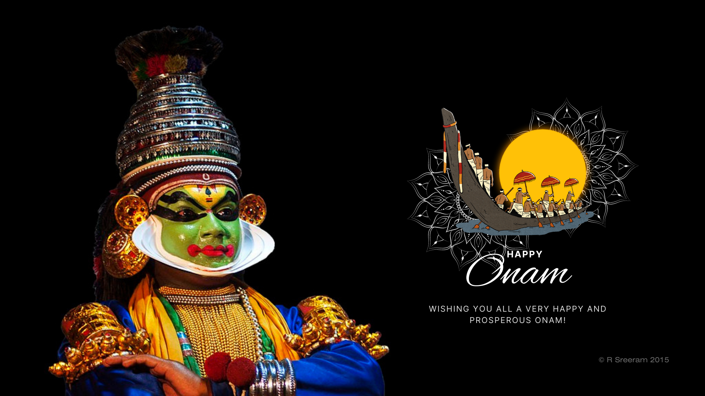

.jpg)
.jpg)
.jpg)
.png)
.png)
Popularly referred to as 'God's Own Country', Kerala is arguably one of the most beautiful states in the country. Home to colourful festivals, traditions, attires and sumptuous food, the state is among the top tourist destinations of India. Lush with tropical vegetation, pristine beaches, serene backwaters and a variety of flora and fauna, Kerala is an ideal destination for honeymooners, families and travel enthusiasts.
Located on the tip of Southern India, the state's capital is Thiruvananthapuram. Serviced by international and domestic airports, which are further connected by roads and rail, Kerala ensures that every corner of it is well accessible by travellers. The highlight of this state for many are the brackish lagoons called backwaters, notably in Alappuzha, which are best enjoyed in houseboats. Also famous here are the practices of Ayurveda which have been hailed far and wide for their healing and cleansing attributes.
The traditional food, festivals and artforms are enticing to the beholder. Onam is the most important festival celebrated with participation from people within and outside the state. Kathakali, an essential traditional Indian dance form, is perhaps a significant testament to the colourful and graceful nature of the traditions of Kerala. Visit and enjoy our rich culture, kind people and hospitality.
Kerala is also sprawling with wildlife sanctuaries, vast tea gardens and quaint hill stations. These places are flocked by tourists throughout the year and have played a significant part in Kerala being awarded by the National Geographic Traveller as one of the top 50 destinations in the world.